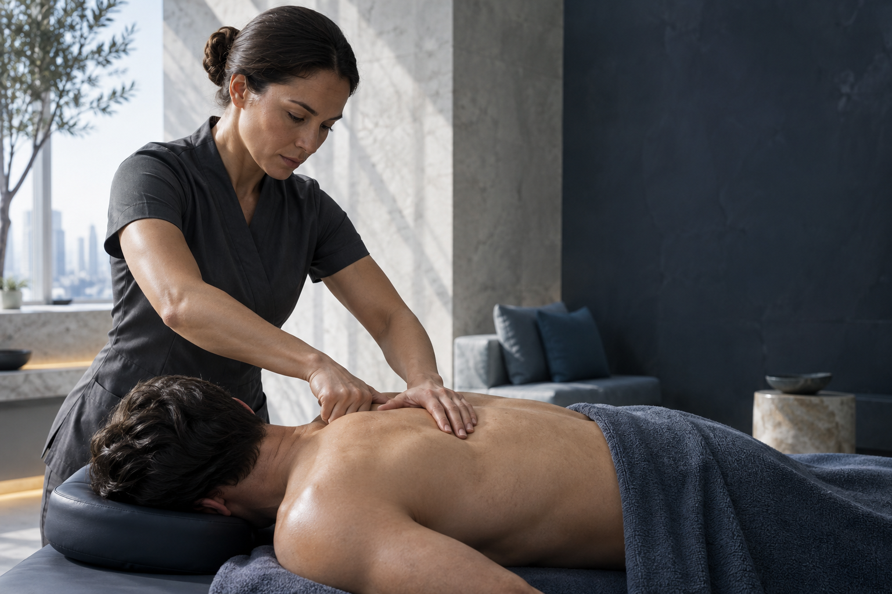
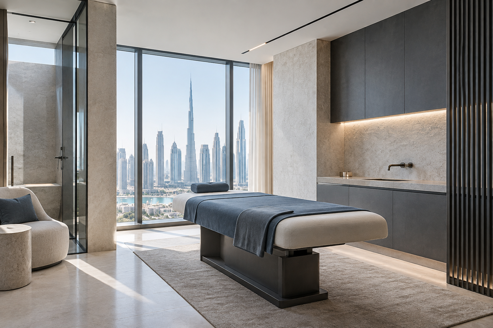

ПРОТОКОЛ / 01ФОКУС: СПИНА
01 / 03Массаж
Массаж
спины
Уменьшаем напряжение и зажимы, чтобы движение снова ощущалось свободным.
РАБОТА С МЫШЕЧНЫМ НАПРЯЖЕНИЕМ↗

ТОЧНОЕ ПРИКОСНОВЕНИЕ · ПЕРСОНАЛЬНЫЙ ПОДХОД
Каждый сеанс начинается с внимания к вашему состоянию. Подбираем технику под задачу, движение и ритм жизни.
Уменьшаем напряжение и зажимы, чтобы движение снова ощущалось свободным.

ТОЧНОЕ ПРИКОСНОВЕНИЕ · ПЕРСОНАЛЬНЫЙ ПОДХОДПомогает снять напряжение и восстановить силы.
↗Для активного тела и возвращения к привычному ритму.
↗Тело не работает по шаблону. Мы соединяем наблюдение, опыт рук и ваш отклик, чтобы подобрать осмысленный способ восстановления.
Слушаем ваши цели, самочувствие и то, как движется тело сегодня.
Выбираем техники и силу воздействия под вашу задачу и комфорт.
Следим за откликом тела и сохраняем диалог на каждом этапе сеанса.
Опытные специалисты, которые умеют слышать человека и бережно работать с его телом.
Сеанс строится вокруг вашего самочувствия, запроса и обратной связи.
Точная работа и спокойное объяснение каждого шага помогают вернуть лёгкость.
«После нескольких сеансов спине стало заметно легче. Я чувствую больше свободы и меньше напряжения.»
«Профессионально, внимательно и действительно эффективно. Больше энергии для того, что я люблю.»
Майкл С. / КЛИЕНТ«Прекрасное пространство и сильная команда. После каждого визита чувствую себя лучше.»
Эмма Л. / КЛИЕНТПриватное пространство, ясные линии и спокойный свет. Всё поддерживает главное — ваше время для восстановления.


Мы собрали ответы на частые вопросы. Если ваш запрос индивидуален, расскажите о нём при записи.
Задать свой вопрос ↗Расскажите о своих целях, состоянии и пожеланиях. Мы поможем подобрать подходящее направление перед визитом.
Обычно сеанс длится 60 или 90 минут. Продолжительность подбирается под выбранную технику и вашу задачу.
Специальная подготовка не нужна. Выберите удобную одежду и приходите немного раньше, чтобы спокойно обсудить запрос.
Свяжитесь с нами как можно раньше, и мы предложим доступные варианты времени.
Оставьте несколько деталей. Мы подберём удобное время и уточним ваш запрос перед встречей.
Вы рассказываете о себе
Мы уточняем детали
Встречаемся в студии